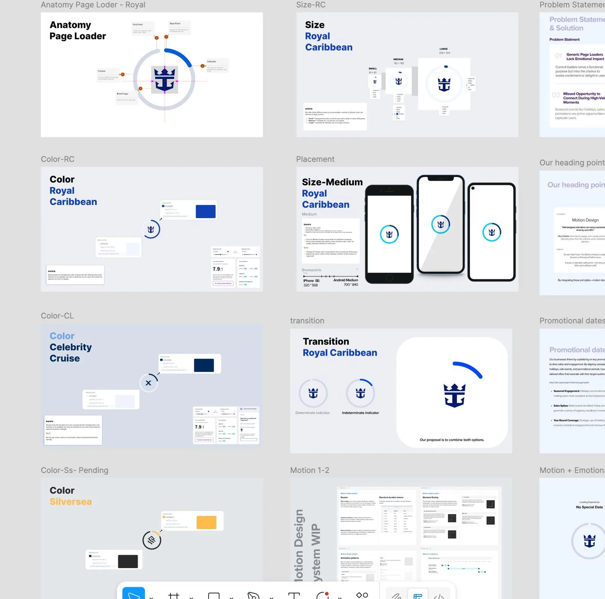
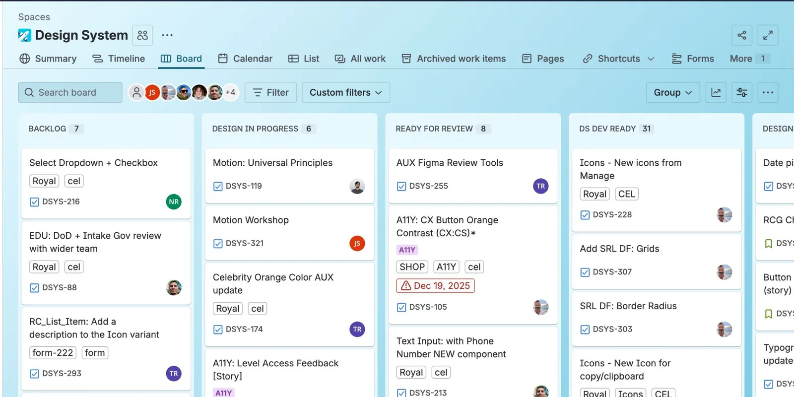

As Royal Caribbean rebranded its e-commerce experience, I helped evolve a legacy design system into a modern, scalable, multi-brand system — owning core UI components end to end, with governance and accessibility baked in.

Background & challenge
Royal Caribbean was transitioning to a newly rebranded e-commerce experience as part of a broader digital transformation. The existing system had to evolve into a modern, scalable foundation aligned with new brand guidelines — while still supporting multiple platforms and product teams.
Components lacked clear usage and accessibility guidance, slowing adoption and inviting drift.
Patterns varied across teams and platforms, fragmenting the experience.
A new brand identity threatened to break consistency if the system couldn't flex to express it.
My role
I owned core UI components within the design system from request to adoption.
Methodology
Every component followed the same path — so quality and consistency didn't depend on who picked it up.
Component deep-dive · Page loader
Before designing anything, I ran a competitive and system audit to establish UX and behavior standards, then defined the behavior principles the loader had to honor:
Then I built it as a scalable system in Figma — structured to be reused across brands:
A trade-off I led
Prioritize system scale and consistency over isolated feature polish — foundations before features, core components before edge cases.
Governance
To prevent fragmentation, every change flows through a structured intake and governance process — from backlog through design review, accessibility checks, and dev-readiness gates.

Governance feeds a centralized foundation — shared tokens, scalable components, consistent patterns, and accessibility-first defaults — reused across teams. (More recently, I've folded AI-assisted steps into the audit, architecture, and documentation stages to move faster without losing rigor.)
Adoption, impact & reflection
Once governance and foundations were in place, we tracked real adoption — the number of teams using the system, component insertions over time, and the high-usage core components carrying the most weight.
Reflection
My goal is always to leave a design system more structured, more scalable, and easier for teams to adopt than when I arrived.